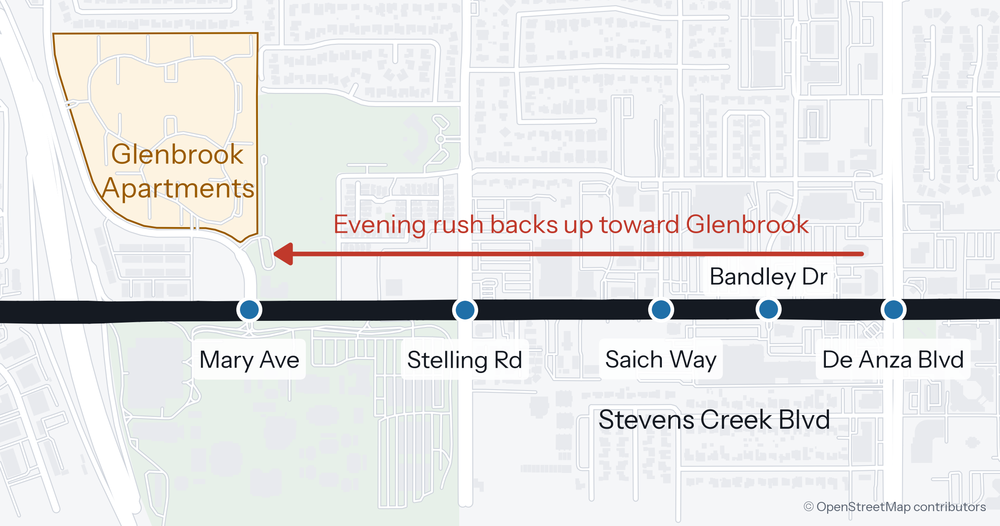
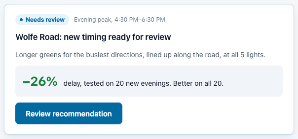
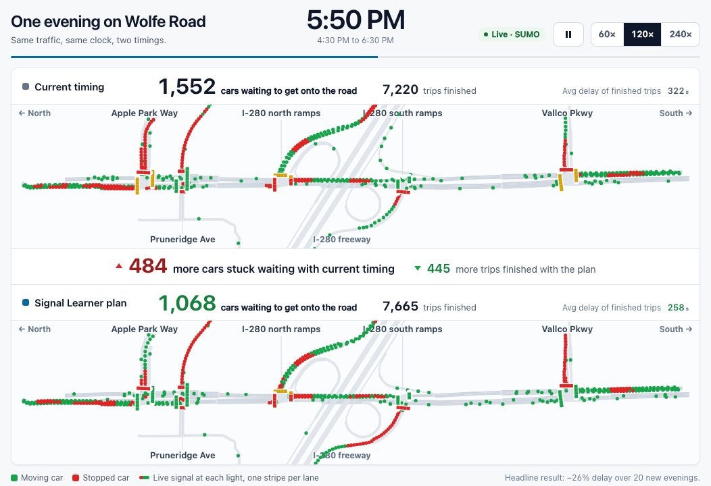
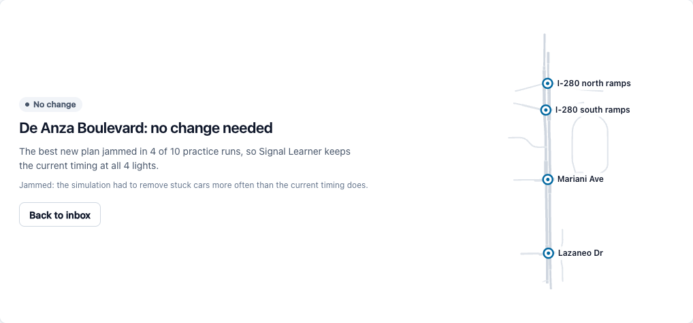

The city told us
“Stevens Creek Blvd is running time of day plans.”
City of Cupertino, Nov 2026

Signal Learner

From road sensors
On a practice copy of the road
Approve or reject one plan

average delay score on Wolfe Road
Simulated test runs on a road the tool never practiced on.

The best new plan failed a jam check, so it kept the old timing.
One Cupertino traffic engineer. Real timing and counts. The engineer decides.
Slides after this are backup, for questions only
Practice copy. Used to pick the plan
The demo run, test seed 200
Seeds 200–219, lower in all 20. The headline
No field test or city timing comparison yet
Wolfe Road, delay score in seconds per trip. All simulated.
| Road | Used for | Traffic |
|---|---|---|
| Stevens Creek Blvd | Building the learner | VTA 2024 counts at De Anza and Stelling |
| Homestead Rd | Building the learner | Generated |
| Wolfe Rd, 5 lights | Final test | Generated, hidden from the learner |
| De Anza Blvd, 4 lights | Final test | Generated, hidden from the learner |
None of the old plans is Cupertino's current timing. VTA counts courtesy of the Santa Clara Valley Transportation Authority (VTA, 2024 CMP Monitoring and Conformance Report).
Car counts and how long detectors stay covered, every 5 min
Routes that reproduce those counts become the practice copy
150 tries, each picked using the scores of earlier tries
Rechecked on 10 more practice runs before it reaches the card
Not a neural network. Not a chatbot. It picks a plan offline and never switches lights live.
Made-up traffic and the modeled old timing
150 tries
future check, not connected
Delay score = delay of finished trips
+ 900 s × each unfinished trip + 900 s × each stuck-car move
÷ every requested trip
Made-up example, not real data
3 trips. Two finish with 60 s and 120 s of delay. One never finishes.
(60 + 120 + 900) ÷ 3 = 360 s
Delay includes time spent waiting to enter the road.
Jam rule: at most 2 more stuck-car moves than the old timing on each run. The later check came after the main test.
Delay score 870.5 → 643.1 s
Worst-origin delay 2,565.8 → 2,768.6 s
For each run and plan, we take the highest starting-point delay score, then average over the 20 runs.
Adaptive control that responds to traffic
Adapts timing to real-time demand
Each intersection schedules, and shares with neighbors
Recommendations to city engineers. Closest to us
What we built is a small simulation an engineer can inspect, and it can say no change. Not a better controller.
Why Cupertino needs this, who the user is, what comes next
What the AI is, whether the test is fair, what −26% means
Signal hardware, city fit, safety, existing systems
Delay score 870.5 → 643.1 s, lower in all 20 simulated test runs